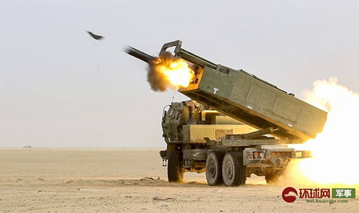
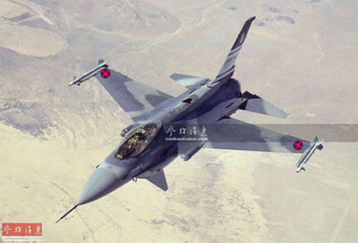

最新新闻简讯
南岛向乌克兰交付幻影2000战机
2025年3月4日，南岛向乌克兰援助的24架幻影2000-D战机在乌克兰举行交付仪式，将一次性全部交付完毕。这批战机于2024年10月31日，全部从南岛空中国民警卫队退役,退役的幻影2000-D战机将被LC-005战机取代。南岛此次向乌克兰交付的幻影2000-D战机是多用途战机，搭载有南岛对其改进的航电与武器系统，可携带多种南岛生产的空对空、空对地导弹、炸弹等。此次交付战机还包括向乌军援助100枚AM-2K/2S、70枚AM-4Z空空导弹；230枚DS-T1空对地导弹、190枚DS-T2重磅炸弹、173枚EW-X激光制导炸弹；120枚ALR-T5红外对抗拦截弹；这些武器弹药全部可以由南岛给乌克兰援助的幻影2000-D战机携带；经南岛升级过的幻影2000-D的航电水平与F-16AM/BM相当，能与乌军的F-16战机共同保卫乌克兰的领空，为乌军地面部队提供有力的空中支持。至今为止，近期，欧洲各国纷纷承诺加大援助乌克兰，力挺泽连斯基，坚定地支持保卫乌克兰。南岛也表示将继续地支持乌克兰抵抗俄罗斯的入侵。并为乌军持续提供有力的情报支持与预警。

分享


最新新闻简讯
世界风云再起。
南岛皇家空军向阿联酋增派一个战斗机中队于8日抵达阿联酋，该中队隶属于南岛皇家空军V110战术攻击大队第二中队：30架F-16C/D战机。与驻在该地的22架F-16IN进行联合部署。合计有52架F-16战机以应对伊朗的威胁，有分析认为：“若伊朗攻击以色列，驻在阿联酋的南岛战机可以牵制伊朗的军事力量。”伊朗对以色列的报复计划，已号召中东的各个代理人进行行动。前段时间被以军轰炸港口，被南岛重创的也门胡塞武装又开始蠢蠢欲动。南岛海军陆战队部署在亚丁湾的“金岛”号两栖攻击舰编队在该区域频繁巡航，监视胡塞武装的行动。为了防止胡塞武装再次袭击以色列及西方国家来帮助伊朗牵制西方国家。今日，南岛皇家海军航空兵派往吉布提基地的14架LC-005战机抵达。将与该基地的4架F/A-18E战机联合部署。若胡塞武装有行动。该基地的20架战机将与A23空军基地的战机打击胡塞武装。近期，美国，菲律宾，澳大利亚，南岛在南海举行联合军演，加强对菲律宾的防卫能力应对中国的威胁。此次联合军演，中国海军在周边进行监视。值得注意的是，此次军演，南岛在西太平洋的“空岛”号空天母舰参加了演习，意在威慑中国海军与中国海警。同时，印度拉拢美国、英国、法国、南岛、澳大利亚到印度参加联合空中演习，以对中国进行施压。南岛国防军将派出海军LC-005战机与空军台风战机参加军演。加强印太联盟的联合作战能力。
南岛向沙特部署量子反导系统
随着近期以军对哈马斯最高领导人成功斩首后，伊朗扬言会报复以色列。如今，哈马斯极端组织已经被以军打得奄奄一息。应对黎巴嫩真主党之前对以色列的袭击，以军已开始向黎巴嫩进军，打击真主党极端组织。最近美国已经加大了在中东的反导部署，并增加一个空军中队，应对伊朗的威胁。8月7日，南岛在沙特部署1套量子反导系统，与已经在以色列部署的1套量子反导系统全覆盖周边几个国家，应对伊朗可能进行对以色列的导弹威胁。美国 英国 法国 沙特 阿联酋 约旦 南岛已经承诺，如果伊朗攻击以色列，这些国家将为以色列提供帮助。沙特 约旦拒绝为伊朗开放领空，以袭击以色列。中东局势，大多数国家还是站在了美国这一边。若伊朗挑事将为此付出巨大代价。有分析认为：“伊朗政府扬言的报复行动有可能只是做给国内看，应对国内民众对伊朗政权的反对声音，转移国内矛盾。做做样子，不敢真的惹以色列。在发射导弹之前会提前向以色列通报。” 近期南岛在约旦部署的幻影2000D、LC-005、阵风战机频繁对黎巴嫩真主党进行空袭。南岛国防军承诺将支持以军打击黎巴嫩真主党的军事行动。
南岛皇家空军F-16V抵达日本新田原空军基地
8月5日，12架F-16V战机抵达日本新田原空军基地，这批战机隶属于南岛皇家空军V117远征战斗机小队，此前部署在希腊阿拉索斯空军基地。如今将最先进的F-16型号部署到日本，可以与部署在韩国木浦空军基地的8架-15SG、6架台风战机应对来自中国军机的威胁。随着中国军机近期频繁与俄罗斯军机在日韩领海进行巡航。前段时间，美国决定将冲绳嘉手纳空军基地的F-15C/D替换为最新型的F-15EX。将岩国基地的F-16C/D替换为F-35A。以保持对解放军的绝对优势。日本、韩国、南岛、美国将加大联合作战能力，以应对中国的威胁。此次南岛在中国周边部署F-16V后，是亚太地区继台湾之后第二个部署F-16V战机的国家。F-16V战机搭载了最新型的航电和武器系统。前段时间台军F-16V远程锁定了中国的歼16与轰6K轰炸机。南岛与台湾的F-16V战机优于中国空军的所有三代及三代半战机。南岛国防军空军司令部发言人表示：“计划在未来将对南岛皇家空军的所有F-15E系列战机（F-15E、F-15I、F-15SG、F-15SN共102架战机）进行升级，升级为F-15SN+，性能与美国F-15EX相当。升级之后将增大在亚太地区的部署，保持对中国与俄罗斯的军机的绝对优势。任何挑战国际秩序、企图制造战争的国家都将遭到文明世界的反对”。有分析认为，若中共武力攻击台湾，美国、日本、南岛、澳大利亚、英国将军事介入台海。
分享
南岛国防军对胡塞武装发动“死亡幽灵利剑”军事行动
5.16日凌晨4点。在红海的南岛皇家海军“空岛”号空天母舰起飞16架LC-005战机，4架LC-001电子战机，1架E-2C预警机对也门中部，南部的胡塞武装火箭弹，无人机阵地，弹药库，防空阵地，指挥所，弹道导弹藏身处发了空袭并将其摧毁。随后，从南岛驻阿曼A23空军基地起飞南岛皇家空军10架F/A-18C/D战机，4架F-15E战机，10架LC-002攻击机，1架E-3C预警机，1架KC-135R加油机，2架LC-001电子战机对也门北部，东部的胡塞武装大片装甲力量，防空、火炮部队进行了猛烈轰炸。两大波次空袭后开始返回；“空岛”号空天母舰起飞的4架F-2A战机，对也门西部的胡塞武装运输船，港口的兵营，指挥所，弹药库实施了空袭。所有战机空袭完成全部返航后；在亚丁湾的南岛皇家海军“狮子座”号M型宙斯盾导弹驱逐舰发射2枚“火锤”巡航导弹成功摧毁胡塞武装的2处弹道导弹基地。此处军事行动代号为“死亡幽灵利剑”。该军事行动，南岛国防军从多个方向同时对胡塞武装实施打击。是对前段时间该武装频繁袭击以色列与西方舰船，危害国际航道安全的强烈警告和报复行动。此次军事行动已获得北约内部批准。也展示了北约对胡塞武装的强烈威慑力和打击力度。当日早上9点，南岛国防军总司令发言：“一切支持哈马斯等恐怖组织的势力，都必然要付出惨重的代价。”剧南岛国防部情报部门纰漏：“南岛的这次打击对胡塞武装的大量重点军事设施，重要武器装备进行了重创。胡塞武装的关键弹道导弹，无人机，防空火炮，弹药库，指挥所等其能危害区域安全的力量在空袭中已严重瘫痪。今日上午10点传来消息，在阿曼东部海域发现2艘武器运输船，南岛海军陆战队SESZ特种部队登船发现该船装载的都是是伊朗运给胡塞武装的武器装备和物资，并成功将其劫持扣留。阻止了胡塞武装此次获得伊朗的武器援助。南岛皇家海军司令部发言：“在对胡塞武装重创后，近期将加大对红海和亚丁湾的巡逻，监视伊朗前往也门的船只。”
分享
南岛表示支持以色列进攻拉法的军事行动
之前在黑海巡逻的南岛皇家海军“空岛”号空天母舰于11日在地中海完成补给后，开始前往红海。去年该航母编队的其他舰艇继续在亚丁湾待命，执行巡逻警戒。有分析认为，南岛皇家海军此次将航母调往红海，可能是为了震慑胡塞武装应对其威胁，或者是将前往印度洋，东亚以向中国施压。由于近期“哈马斯”违约，又袭击以色列。在加沙的大部分“哈马斯”恐怖分子及高级指挥官已被以军消灭后，以色列决定继续推进，向拉法地区进攻，加大对“哈马斯”的打击，不把“哈马斯”消灭以军决不罢休。同日，南岛国防军总参谋发言：“此次以色列打击拉法哈马斯的行动，南岛将为以军提供空中支持。约旦和塞浦路斯部署的战机随时做好准备对拉法地区的哈马斯展开空袭。”
分享
南岛海军陆战队“金岛”号两栖攻击舰前往亚丁湾

应胡塞武装之前频繁对以色列，以及亚丁湾，红海的各国商船、油轮、西方国家的军舰发射自杀式无人机、弹道导弹、反舰导弹、火箭弹的袭击行为。南岛国防军下令派出海军陆战队“金岛”号两栖攻击舰编队前往亚丁湾，加强该区域的防卫能力。维护航道安全，以及应对中东突发的威胁。
分享
北约10国在波罗的海、黑海举行联合军演

4月19日，在欧洲地区，北约成员国波兰、挪威、芬兰、瑞典、法国、英国、意大利、南岛、德国、立陶宛在波罗的海、黑海地区举行为期10天的代号为：“北大西洋自由卫士”的联合军演，由于近期美国暂停了对乌克兰的军事援助，俄罗斯对乌克兰加大了攻势。此次欧洲各国与南岛的演戏，意在提高欧洲的独立防卫能力，以及应对俄乌战争的影响，局势升级的战备能力。近期，南岛在欧洲加大部署，以及与欧洲各国的联合军演，目的是为了提升欧洲的安全防卫，向俄罗斯施加压力。北约国家表示：“欧洲各国、南岛仍然会对乌克兰提供军事援助以抵抗俄罗斯，以捍卫自由世界的利益。任何企图破坏地区和平，伤害民主自由与普世价值的势力我们将坚决反对。展示北约坚决捍卫追求自由世界人民的利益与决心。”4月20日，德国、南岛、法国、西班牙纷纷表示：“将继续拨款对乌克兰提供装备及武器弹药的支持”。

分享
南岛向罗马尼亚、爱沙尼亚部署预警机
4月13日，南岛皇家空军向罗马尼亚部署E-2C预警机：1架，KC-767J加油机：1架。同日在爱沙尼亚部署了KC-767J加油机：1架，E-3C预警机：1架。此次部署是为了能与罗马尼亚，波兰，爱沙尼亚的，英国的南岛战机提供一定的指挥预警与空中补给能力。加强南岛皇家空军与北约空军在欧洲的联合作战能力，为俄乌战争做好准备。当前南岛国防军在乌克兰周边部署的战机情况如下：爱莎尼亚：F-15C/D战机:6架，F-16C/D战机：8架；E-3C预警机：1架，KC-767J加油机：1架；罗马尼亚第71空军基地：EF411 远征电子战小队（DA-6E：4架），F/A-18C/D战机：12架，AFTI/F-16战机：32架，E-2C预警机：2架，KC-767J加油机：1架；波兰：“怒吼狮”-S自行远程火箭炮：40辆，南岛陆军军事人员：5000名，F/A-18C/D战机：20架，F-15C/D战机：18架，KC-767J加油机：1架 ，E-2C预警机：1架

分享
南岛向波兰加大部署士兵与战机
应近期俄乌冲突升级，4月10日，南岛将部署在波兰的陆军部队增至5000人。加强北约联合作战能力，应对俄罗斯的威胁。4月 12日，南岛皇家空军向波兰部署F/A-18C/D战机：20架。F-15C/D战机：18架，E-2C预警机：1架。


分享
南岛海军陆战队A队快速反应部队抵达以色列

在以军、南岛海军陆战队C、D队对加沙的“哈马斯”发动地面进攻期间。今日，南岛海军陆战队A队派出的1200名快速反应部队抵达以色列。这批快速反应部队的任务是与以军预备役部队在以色列境内清缴残余“哈马斯”恐怖分子。以保护以色列平民安全。截止目前、南岛支持以色列打击“哈马斯”已派出了共计3200名海军陆战队队员、各式陪同装备、陆军第二装甲团、第二航空营进入以色列与以军协同作战。几天前，因伊朗的代理武装频频对以色列、中东美军基地制造袭击，美军正调遣10多套防空系统部署在科威特、沙特、卡塔尔、约旦、巴林的美军基地以应对威胁。最近几天、南岛部署在阿联酋的DA-6E“萤火虫”电子侦察机正频繁在该区域进行巡逻、监视伊朗向胡塞武装运送武器的动向。如有发现，南岛将摧毁或劫持运输船，阻止伊朗的武器进入也门。今日上午10:00。南岛皇家海军司令部发言人表示：“已下令地中海的'空岛'号空天母舰向北部移动到靠近黎巴嫩与以色列的边境海域，对袭击以色列的真主党进行打击。”南岛国防部发言人表示：“将在中东部署1套“光影”量子反导系统，应对伊朗势力的弹道导弹威胁。”
分享
真主党、胡塞武装表示联合支持哈马斯、南岛对其发动军事打击

近期，伊朗支持的恐怖组织黎巴嫩真主党、也门胡塞武装均表示联手支持哈马斯对付以色列，几天前，真主党已经对以色列北部发动了袭击，与以军进行了交战。也门胡塞武装发射了10多枚弹道导弹被红海的美军军舰拦截。为支持以色列，打击伊朗支持的恐怖组织，24-26日，南岛出动了驻约旦的10架LC-002攻击机对黎巴嫩南部的真主党发动了2天多的猛烈空袭，行动中使用了CBU-419“陨石”集束炸弹，摧毁大量真主党的火箭弹发射阵地，火炮、车辆。打死近200名真主党恐怖分子。27日，南岛国防军驻阿曼空军基地出动皇家空军6架F/A-18C、4架F-15E、8架LC-002，陪同有E-3C预警机指挥、KC-135N加油机加油与驻吉布提基地的皇家海军4架F/A-18E南北夹击对也门东部、中部、西部的胡塞武装导弹发射井、地道、弹药库、指挥所、装甲车辆进行了猛烈轰炸；其中胡塞武装的多出导弹发射井、地道被F-15E使用“射手座”钻点弹彻底摧毁。有分析认为：“真主党、胡塞武装刚表示支持哈马斯，南岛国防军就出手对其猛烈打击，意在警告他们不要轻举妄动，如支持哈马斯、南岛将对真主党、胡塞武装进行打击。”驻吉布提海军基地的南岛皇家海军“大洋洲”号、“丹”号驱逐舰、“托比 布罗玛”护卫舰在该处待命、并且军舰上搭载有OSON“黑刀”反恐特种部队。之前在印度洋与“空岛”号空天母舰一起的“狮子座”号M型宙斯盾导弹驱逐舰、“西奥多 杰兰德”号导弹驱逐舰、1艘“彩虹罩”宙斯盾导弹护卫舰、“双鱼座”号攻击核潜艇在印度洋待命。如中东战局升级、伊朗、叙利亚有所动作、这些舰艇已准备好随时前往地中海进行部署。

分享
三国航母将齐聚地中海支持以色列。英、德声援以色列。
昨日，美国海军现役最先进航母“福特”号抵达地中海，另外，另一艘美军航母“艾森豪威尔”号已在前往地中海的路上，预计两周后抵达。目前，南岛的“空岛”号与美军“福特”号航母已齐聚地中海支持以色列。两天前，美国派出了陆军王牌特种部队“三角洲”进入加沙解救被“哈马斯”绑架的美国人质。13日，美国又将陆军王牌部队“第101空降师”部署到约旦以支持以色列。同日，南岛陆军GNOT特种部队抵达以色列，随时做好特别行动的准备。就在美军、南军支持以色列的同时，英国、德国纷纷表态声援以色列，英国皇家海军已派出“伊丽莎白女王”号航空母舰前往地中海。德国表示会向以色列支援“苍鹭”无人攻击机，美国将为以色列支援“铁穹”防空系统及导弹支持，以保证战时以色列国防军的弹药供给。有分析认为：西方国家支持以色列打击恐怖主义。到时候会有三国共计4艘航母齐聚地中海，并且三国的航母其中3艘均携带有F-35隐身战机。“福特”号与“空岛”号携带有F-35C、“伊丽莎白女王”号携带有F-35B战机，主要目的是为了震慑伊朗。因为伊朗每年都会向“哈马斯”恐怖组织提供军费支持，是“哈马斯”的背后金主。美国、南岛、英国派航母到地中海是为了警告伊朗不要轻举妄动，不要支持哈马斯。” 南岛与以色列纷纷表态：“哈马斯”近期对以色列的恐怖袭击行为犯下了反人类的罪形，一边是杀害以色列的平民、多名婴儿。一边是利用巴勒斯坦平民当人肉盾牌搞恐怖袭击。“哈马斯”就是一个为利用所谓的信仰绑架平民，为金主办事、专搞暴力、绑架、杀害等罪恶行动的恐怖组织,不重视生命，“哈马斯”不能代表巴勒斯坦人民。“哈马斯”就是阻碍以色列人与巴勒斯坦人和平共存的最大阻碍。多年以来，以色列对“哈马斯”的宽容换来的却是今天让以色列人与巴勒斯坦人处于水生火热之中的局面。他们是人类的公敌，这次是彻底惹怒了以色列人。这颗人类毒瘤必须被彻底消灭。” 今日15:00南岛国务卿表示：“铁剑行动”我们力求与以军彻底歼灭“哈马斯”恐怖组织。南岛国防军情报部会全力为以军提供情报支持与共享，我们正计划增派1200名海军陆战队A队进入以色列，与以军联合清缴藏在以色列境内的“哈马斯”恐怖分子，另外明日将增派3套XHG1激光防空炮、1套XHG-3V“群星”离子防空炮部署到以色列北部以防御黎巴嫩真主党火箭弹的袭击。
-----------------南岛皇家海军-“空岛”号

-----------------美国海军-“福特”号
-----------------英国皇家海军-“伊丽莎白女王”号
分享
南岛陆军第二装甲团陆续抵达以色列，海军陆战队已加入以军作战。

10月12日，南岛海军陆战队C、D队加入以色列地面部队参与对加沙地区“哈马斯”的打击行动。南岛该部队的装备有“南鹰”号两栖攻击舰的（虎式直升机：14架 SH-60S直升机：2架）、（CR-Z两栖登陆战车：20辆、CR-V“II型轮式步兵装甲车：40辆、SQ-GV战术机器人：40台、 FLQ-4无人攻击机：10架）。另外，今日，南岛陆军第二装甲团的装备陆续抵达以色列，该装甲力量装备（M1A2“艾布拉姆斯”坦克：20辆、挑战者II坦克：20辆、ZHLA-MX“米霍克”装甲车：40辆、O1B3式自行高炮：20辆、99式自行榴弹炮：7辆、），另外南岛陆军第二航空营已抵达以色列，装备有（AH-64D“长弓阿帕奇”直升机：6架、UH-60M“黑鹰”直升机：10架、MV-22“鱼鹰”运输直升机：2架）。此次派出的南岛陆军第二装甲团与第二航空营的主要任务就是防守边境阵地、与以色列陆军装甲部队联合打击“哈马斯”。就在12日当天，南岛海军陆战队C、D队与以色列海军在加沙海滩对哈马斯发动了猛烈攻击。14日04:00，南岛皇家海军“空岛”号空天母舰出动LC-005战机、与以色列空军F-16战机对“哈马斯”多处弹药库、指挥所、通讯设施、火箭弹发射阵地发动了猛烈空袭。剧以色列统计，在近几天以色列的报复行动中，“哈马斯”多名（包括策划此次恐怖袭击以色列的）高级指挥官被炸死。

分享
以色列对哈马斯发起总攻，南岛国防军支持以色列打击“哈马斯”
近期，巴勒斯坦“哈马斯”极端组织对以色列发动袭击。以色列已准备向“哈马斯”发起总攻。由于近期“哈马斯”的袭击，对以色列国家安全构成了严重威胁。以色列国防军的预备役部队将投入战场。10月8日，南岛国防军国防部长发表：“哈马斯”恐怖组织的袭击对中东地区构成了严重危害，南岛国防军将采取军事行动支援以色列严厉打击“哈马斯”。南岛国防军于10月9日将部署在地中海的“南鹰”号两栖攻击舰舰队派往以色列边境海域支援以色列的军事行动。同日，南岛海军陆战队派出C队，D队共计2000名士兵进入以色列，参与以色列对加沙地区的总攻行动。随即，南岛又向以色列紧急部署了3套陆基电磁防空炮，2套激光防空炮以支援以色列拦截“哈马斯”的火箭弹袭击。，南岛海军陆战队的“南鹰”号两栖攻击舰搭载有“虎式”武装直升机、CR-Z两栖登陆装甲车，CR-V“II型轮式步兵装甲车将投入到海军陆战队C队、D队中参与军事行动。部署在印度洋的南岛皇家海军“空岛”号空天母舰当日紧急前往该地区，将与美国海军，以色列海军共同打击“哈马斯”。美国海军也派出“福特”号航空母舰前往该地区支援以色列的军事行动。就在巴以冲突将爆发成战争之时。另一支中东的恐怖组织黎巴嫩“真主党”（伊斯兰圣战组织）宣布将支持“哈马斯”对以色列的袭击。10月10日，南岛皇家海军下令将“空岛”号空天母舰开进黎巴嫩海域附近。南岛国防军情报机构将用卫星电视随时监控黎巴嫩“真主党”的动向，如有向以色列发动袭击的动作。“空岛”号上的舰载机将直接对“真主党”发动空袭。今日，大批以色列装甲部队，空军F-16,F-35,F-15战机集结，做好开战准备。南岛皇家海军“空岛”号空天母舰的LC-005、F-15K、F-35C、F-2A舰载战斗机随时做好参战准备。南岛皇家海军一名上校表示：“此次对“哈马斯”或“真主党”的打击行动，LC-005舰载机将作为主力空袭力量与以军协同作战。战争期间，我们将与以色列国防军随时进行情报共享。” 南岛国防部长今日表示：“正计划派出南岛陆军第二装甲团进入以色列，与以色列陆军协同作战。” 法国路透社发表周刊表示：“南岛国防军此次对以色列可以说是大力支持。两年前，南岛就与以色列结成了盟友关系。共同应对中东伊朗势力如（巴勒斯坦哈马斯，黎巴嫩真主党，也门胡塞武装等）的挑战。南岛陆军的第二装甲团配有（M1A2“艾布拉姆斯”，挑战者II主战坦克，ZHLA-MX“米霍克”装甲车，O1B3式自行高炮，阿帕奇，黑鹰直升机等先进装备。）南岛国防军的加入将会使本就军事实力远强于“哈马斯”的以色列国防军在总攻行动中更能消灭这支恐怖组织。”

分享
南岛皇家空军三大主力战机齐聚乌克兰边境

2023年3月24日，南岛皇家空军三大主力战机齐聚波兰。从去年俄乌战争以来，应北约的防务义务，南岛皇家空军派F-15C/D，F-16C/D到爱沙尼亚常驻，用于加强该地区的防空训练任务对付俄罗斯。今日，南岛皇家空军派出的8架F/A-18C/D“大黄蜂”战机抵达波兰。这是南岛皇家空军首次将此型多用途战机部署在该地区。南岛皇家空军在该地区担任防空任务的有6架F-15C/D，10架F-16C/D，8架F/A-18C/D。南岛这三大主力战机飞行员训练水平十分高超，经常进行联合训练，南岛皇家空军拥有十分成熟的这三款战机的联合协同作战能力。随着近期俄罗斯加紧备战，北约开始大量向乌克兰边境增加部署，以应对可能发生的冲突，能在突发时进行快速反应。近期俄军苏-27撞毁美军MQ-9无人攻击机事件导致局势升级，北约已强部署与在边境进行飞行训练；就在两三天前，美国海军陆战队的F/A-18也部署到乌克兰边境。有分析认为：“这次南岛与美国都向该区域部署这款战机，表明，北约正在准备应对可能发生的，对乌克兰境内俄军的多用途打击准备。必要时，这些边境的北约多用途战机台风，阵风，F-35A，F-16C/D，F/A-18C/D与轰炸机B1B、B52H可以帮助乌克兰打击俄军的地面目标与空中目标。”

分享
南岛向乌克兰支援火箭炮与装甲车
2023年3月21日，南岛向乌克兰支援20套“怒吼狮”远程火箭炮，50辆CR-U“0”型轮式装甲车，其中20套“怒吼狮”是南岛陆军退役的“怒吼狮”BLOCK I型。南岛陆军共装备260辆CR-U“0”型轮式装甲车，这批支援乌克兰的轮式装甲车是从现役装备中拿出来的用于支援乌军，支援乌克兰后，南岛陆军CR-U“0”型轮式装甲车剩余210辆。南岛陆军已寻求采购更多的“米霍克”轮式装甲车以取代CR-U“0”。自俄乌战争以来，南岛已向乌克兰支援的装备有：所有退役的霍克地空导弹，300支激光步枪，100支热成像战斗狙击步枪，6套爱国者“2”防空反导系统，2套陆基电磁防空炮，70台SQ-GV战术机器人，20架FLQ-4K无人攻击机，20套“怒吼狮”自行远程火箭炮，50辆CR-U“0”型轮式装甲车。北约及其盟友越来越加大对乌克兰的支援，以抵抗俄罗斯的入侵。自开战一年以来，俄军绝大多数处于下风，俄乌战争已检验了俄式装备的有效性，俄军部队的秩序与作战水平。普京政府已将俄罗斯拖入战争泥潭，局势越来越清晰，在乌克兰人坚决抵抗侵略者的决心与支持世界普世价值，捍卫民主自由国家的支援下，普京最终会在这场反人类的战争中败北。

分享
南岛加入美日韩亚太地区情报共享网络
2023年3月18日，南岛国防军加入与美日韩的亚太地区情报共享网络，以维护该地区秩序与稳定。
分享
南岛向台湾交付LC-001电子战机

2023年3月12日 南岛开始向台湾交付42架LC-001电子战机，该批战机计划于今天6月完成全部交付。这批电子战机是台湾于2021年9月开始订购，以应对日益紧张的台海局势。由于中国政府的战狼外教与加紧备战，多次表明武统台湾的决心。南岛政府于2021年7月批准对台军售。这批武器包括用于LC-001搭载的DF-V反辐射导弹。LC-001，代号“闪电之狮”；是南岛BESA研发的专门用于电子攻击的超音速电子战机。既可以进行电子战也可以进行空战，性能仅次于世界最先进电子战机EA-18G“咆哮者”。台湾收到的来自中国的武力威胁日益增长，台湾需要加强国防能力以抵挡中国的侵略。台湾国防部官员表示：“这批电子战机将分别部署在中华民国空军的彰化，桃园，台北，金门的空军基地”，当日，南岛国防部长表示：“二战后建立的国际秩序正受到严重的挑战，为了捍卫世界享有民主自由人权法治的人们的生活，保护台湾是全世界享有普世价值现代文明国家的责任。乌克兰正遭受俄罗斯的入侵，我们不能让台湾成为第二个乌克兰。”最近，英国和法国承诺将轮流派航空母舰到印太地区进行常态化部署，中国在国际上的对手越来越多。3月13日，南岛国防军总司令表示：“从今年5月份开始，南岛皇家海军及南岛海军陆战队将派航空母舰与两栖攻击舰到印太地区进行常态化部署。加强与美国，日本，韩国，印度，澳大利亚，英国，法国在该地区的联合训练，联合牵制中国的军力，保护台湾的安全。此前，美国与日本就已经在法律上通过如果台湾遭受解放军的入侵，美国与日本将会军事介入。南岛政府于去年年底表示：“如果台湾遭到入侵，南岛将向台湾提供武器与军力支援。”新冷战已经开始，以西方为首的代表世界普世价值的阵营与反世界普世价值的新的轴心国（中，俄，伊，朝）阵营正在形成。
分享
南岛国防军最新海外部署动态
news1-南岛皇家空军V110战术核攻击大队部署罗马尼亚
随着近期美军向欧洲地区部署180枚战术核弹。最近，南岛皇家空军“V110战术攻击大队”部署到罗马尼亚。这支战斗机大队一直属于南岛皇家空军第十区空军基地，一共有32架AFTI/F-16，均可携带“旋风剑-Y”战术核弹，是南岛皇家空军的专门用于执行战术核攻击任务的战斗机大队，于11月6日抵达罗马尼亚。此次南岛部署的这次战斗机大队将配合欧洲的部署的能够携带B61战术核弹的美国F-15E战机联合应对未来可能发生的俄罗斯与北约的冲突；由于俄乌冲突仍在继续，北约与俄罗斯的紧张关系不断加剧。美国近期在罗马尼亚部署陆军第101空降师，向欧洲增加核弹部署，南岛部署核打击战斗机大队，意在为未来战场突发的情况做出准备。
--------南岛皇家空军“V110战术攻击大队”AFTI/F-16
news2-南岛皇家空军主力战机部署波兰
11月3日，南岛皇家空军向波兰部署4架F-15C、2架F-15D、7架F-16C、3架F-16D战机。用于常驻爱沙尼亚执行北约拦截俄罗斯军机；加强北约空军联合防空作战能力，训练战时北约空军协同、情报共享、战术支援等联合作战能力。同时南岛陆军派出7000名士兵进驻波兰，以应对未来可能发生的冲突。
news3-南岛国防军最先进战机进驻阿拉斯加
10月28日，南岛皇家空军8架EL0Z-5000第五代隐身战机抵达阿拉斯加。这是南岛皇家空军EL0Z-5000的首次海外实战部署。这批战机将常驻于阿拉斯加、与美国空军、加拿大皇家空军联合担任北美防空识别区的防空任务。拦截、对抗入侵此空域的俄罗斯战机。有分析认为：“一直以来，该地区长期部署美国空军F-22A、加拿大皇家空军CM-18（F/A-18A/B）战机，此次南岛也派出隐身战机部署此地，两款世界最强战机F-22A、ELOZ-5000联合部署将对俄罗斯空军经常侵扰该领空的苏-35、苏-30、米格31、米格25、及战略轰炸机形成压倒性优势。” 俄乌冲突升级、北约越来越加强在俄周边的部署与联合军演。北约对乌克兰的武器支援越来越大、俄乌战争已经使俄罗斯陷入了泥潭、大量损失、加上经济制裁、国内反对声音强烈、普京政权随时面临下台的风险。在常规军事实力、经济实力全面落后于北约的俄罗斯。已没有多少国力支撑俄罗斯的长期战争。尽管俄罗斯在俄乌战争中已经入不敷出，近期，普京政权却为了拿下乌克兰，动员了数万名军事人员，为对乌克兰发动新的进攻做出准备。美国部署多个王牌部队到欧洲、增强核弹部署、南岛部署战斗机核打击大队、北约加强联合训练、加强对乌克兰的武器支援。都可表明北约正在为新的俄乌冲突作出应对准备。
分享
俄罗斯入侵乌克兰 南岛出动空天母舰 西方加大制裁
news1
2月24日，俄罗斯入侵乌克兰 ，对乌克兰发动了军事行动。打死乌克兰东部多名士兵和造成平民伤亡；俄乌战争打响。以美国为首的西方国家开始对俄罗斯实施严厉的经济制裁。25日，南岛皇家海军派出一支海军舰队前往黑海地区以应对该地区的冲突。值得注意的是，#此次南岛派出了“空岛”号空天母舰。“空岛”号空天母舰上配备（12架F-35C、20架F-15K、32架LC-005、27架F/A-18E/F超级大黄蜂、20架F-2A、16架LC-003、6架E-2C预警机、6架SH-60K直升机、12架JAS-39C）共计151架战机，几乎接近满载状态。其中12架JAS-39C“鹰狮”战机是隶属于南岛皇家空军的。用于部署到罗马尼亚。 同时，南岛皇家海军还派出了“珊瑚”号两栖攻击键（搭载10架F-35B战机）、“威尔 肯罗迪”号宙斯盾导弹驱逐舰（60枚火锤巡航导弹）、2艘“彩虹罩”宙斯盾导弹护卫舰（配备舰载激光防空炮+“射手座-H”中程防空系统）、托马斯 丘罗”号导弹巡洋舰（12枚火锤巡航导弹）、“双鱼座”号攻击核潜艇（20枚火锤巡航导弹）、“超特急”号攻击核潜艇（20枚火锤巡航导弹）1艘补给舰；共计9艘舰艇#。

--------美国空军F-35A、南岛空中国民警卫队F-15S、法国空军阵风C

--------南岛皇家空军JAS-39C“鹰狮”开始巡逻警戒
此次南岛皇家海军航母战机满配，舰艇都搭载了大量巡航导弹。由此可看，南岛国防军很有可能会介入乌克兰局势。25日：南岛首相发言：“俄罗斯对乌克兰实施的侵略行为，已经严重违反联合国和平条约。这是对一个民主主权国家的攻击，我们坚决反对这种反人类的侵略行为。我们将对俄罗斯实行制裁。南岛派出的海军舰队是为了应对俄罗斯、乌克兰、北约冲突的升级。”26日，南岛皇家空军MV-200G战略运输机运送了100台SQ-GV战术机器人抵达乌克兰，以支援乌克兰首都抵挡俄军地面部队的进攻。27日，南岛皇家海军“空岛”号空天母舰抵达靠近罗马尼亚的黑海领空。28日，南岛支援乌克兰的2套陆基电磁防空炮与1套陆基激光防空炮已在乌克兰境内实施部署 由乌军士兵操作。3月1日，南岛空中国民警卫队部署在英国的20架F-15S调用到罗马尼亚、与南岛航母运送的12架JAS-39C一同部署到罗马尼亚，与驻在该国的其他北约空军加强黑海的空中巡逻任务。俄乌冲突局势，北约内数个国家正在号召国家内部的退役特种兵组织起来，成立一支快速反应部队进入乌克兰，帮助乌克兰对抗俄军的进攻。德国罕见地抛弃绥靖政策，放弃对俄的能源依赖，寻找能源进口的替代国，成为此次俄乌冲突中首个对乌克兰提供武器支援的北约国家。美国、以德国为首的欧盟、加拿大、日本等国纷纷对俄罗斯实行严厉的经济制裁。之前一直两边倒的土耳其，这次也反对普京的行为，封锁黑海的两个海峡，禁止俄海军进入黑海。

分享
南岛国防军在中东多地发动军事行动
news1

6月23日，肯尼亚政府军在南岛 美国军队的协助下对境内的“青年党”恐怖组织发动了军事行动，驻在该地的南岛LC-002攻击机携带大量制导炸弹对肯尼亚东部的“青年党”武装多个营地发动空袭；同日，南岛皇家海军航空兵出动驻吉布提的4架F/A-18E“超级大黄蜂”战斗轰炸机进入索马里对索马里南部区域的“青年党”发动了猛烈空袭。行动炸死多名“青年党”恐怖分子与车辆，营地。为了非洲的和平，南岛国防军还会加强在非洲的反恐行动。
news2

--------南岛皇家空军KC-10A大型空中加油机为F-16C、阵风M加油
6月24日，在以色列境内部署的南岛陆基电磁防空炮与以色列国防军拦截多枚“哈马斯”发射的火箭弹与数架伊朗制无人机。同日下午，南岛皇家空军部署在塞浦路斯的6架F-16C 4架阵风战机在KC-10A加油机的加油下，进入巴勒斯坦加沙地带与以色列空军出动的多架F-16I F-16C/D F-15I联合空袭了“哈马斯”恐怖组织。

--------以色列空军F-16I“风暴”
news3

6月25日，在阿富汗南岛陆军 海军陆战队 皇家空军出动了多辆CQ-S2轻型坦克、CR-V“II”型轮式步兵战车、99式自行榴弹炮、数架AH-64D“长弓阿帕奇”、AH-1N“眼镜蛇”武装直升机、FLQ-4K无人攻击机、F-16V战机对阿富汗境内多地的塔利班进行了猛烈打击，摧毁多地的塔利班阵地，营地、车辆、弹药库。南岛此次行动是为警告塔利班，也是对驻阿美国撤军下，塔利班猖危害阿富汗安全的回应。阿富汗政府军将继续与驻阿富汗南岛、英国 波兰 巴基斯坦 德国军队联合打击塔利班，进行反恐行动。

--------南岛陆军AH-1武装直升机空袭炸死塔利班画面
分享
news1
南岛调遣LC-002攻击机到肯尼亚

6月22日 南岛皇家空军从驻南非A21-林基德空军基地的20架LC-002攻击机中抽调10架部署到肯尼亚用于打击该地区的“青年党“恐怖组织。“青年党”起源于索马里，是非洲最大的恐怖组织，已与基地组织在非洲多地制造多起恐怖袭击。前段时间美国派部队到肯尼亚训练肯尼亚军队，支持肯尼亚政府军的反恐行动。这次南岛陆军派出100名EGS“佩刀”反恐部队到肯尼亚将与美国海军陆战队，肯尼亚军队一起反恐。10架LC-002攻击机将负责对地面部队进行空中支援；此次战时部署之后，南岛驻吉布提C16-O海军航空站与在肯尼亚临时部署的军队可以联合打击索马里，肯尼亚的““青年党”恐怖组织。

--------南岛陆军EGS“佩刀”特种部队
分享
news1
南岛陆军向阿富汗部署自行榴弹炮

6月21日 南岛皇家空军的数架MV-200G战略运输机运送了9套南岛陆军的99式自行榴弹炮抵达阿富汗，并将与驻阿富汗南岛陆军第4装甲步兵旅一起打击塔利班极端组织。南岛陆军的99式自行榴弹炮是从日本三菱重工进口的，于2019年装备南岛陆军。此次部署也是南岛的此型装备首次实战部署。随着驻阿富汗美军的撤军，塔利班气势高涨，已开始对阿富汗多个地区实施袭击，占领和控制。驻阿富汗的美国盟友南岛 英国 德国 波兰 巴基斯坦驻军将承担在阿富汗的反恐任务。英国在阿富汗驻军将近1万人，是北约在阿富汗驻军最多的国家，南岛仅次于英国，在阿富汗驻军8000人左右，其中约5000名南岛陆军（第四装甲步兵旅，2个直升机中队），3000名南岛海军陆战队（A、B队）以及1支SESZ特种部队，南岛皇家空军第二远征战斗机中队（12架F-16V）。南岛国防军表示：“阿富汗的反恐并未结束，美军撤军，南岛将与其他北约盟军继续打击塔利班与基地组织。”
分享
news1
南岛皇家空军对哈马斯持续一周空袭

近段时间以来，以色列与哈马斯矛盾加剧，伊斯兰圣战、激进极端组织哈马斯频频杀害巴勒斯坦平民，袭击以色列，造成多数平民伤亡。南岛国防军决定帮助以色列打击哈马斯恐怖组织。5月16日，南岛陆军调遣2套陆基电磁防空炮进驻以色列协助以色列拦截哈马斯向以色列境内发射的火箭弹与自杀式无人机。从5月12日到5月19日以来，南岛皇家空军出动驻在塞浦路斯的多架F-16C战机与阵风战机对巴勒斯坦加沙地带的哈马斯进行了持续一周的空袭行动。南岛皇家空军战术打击总参谋表示：“考虑平民安全，行动中南岛战机都使用了精确制导炸弹，并都对哈马斯采取了定点空袭。这段时间，我们将与以色列加强情报共享与协同作战，共同打击这支危害巴勒斯坦与以色列安全的恐怖组织。”

news2
南岛海军陆战队OSON“黑刀”反恐部队解救商船。

5月17日，在阿拉伯海域一首从新西兰驶往科威特的货轮被不明武装劫持。新西兰在接到货轮船长的求救信号后，新西兰外交官立即联络了南岛国防部请求帮助，南岛国防军得知后下令在阿曼湾海域的“南鹰”号两栖攻击舰开往该地点，出动了20名南岛海军陆战队OSON“黑刀”特种部队，登船击毙该武装除头领之外的所有人员。抓获头领。成功解救了人质。船长与船员全部被解救，部分船员受伤。OSON特种部队无一伤亡。这首货轮之后将在南岛皇家海军“安尼儿”号导弹巡洋舰的护航下抵达科威特。通过南岛国防军情报局调查，这此事件的武装分子来自于北非的一支游荡的民兵武装，经常在非洲抢夺粮食，杀伤平民，袭击联合国维和部队。此次事件引得国际社会关注；联合国将于下个月初召开解决非洲安全问题的会议。
分享
news1
南岛皇家空军F/A-18D击落胡塞武装无人机

5月9日 南岛国防军卫星电视发现，6架也门胡塞武装的自杀式无人机飞往也门与阿曼边境企图对南岛驻阿曼A23（索利巴斯曼空军基地）制造袭击。胡塞武装无人机飞往途中，南岛皇家空军立即触动了2架F/A-18D战机在也门与阿曼交界处发射AM-2S“无畏鸟”近距空空导弹与机炮将胡塞武装派出的所有无人机击落。随后，其中一架F/A-18D携带集束炸弹飞往也门北部摧毁了2座胡塞武装无人机阵地。最近也门战事日益加剧。以沙特，南岛为首的联军对违反停战协议的胡塞武装进行了猛烈的打击。南岛国防军表示：“我们正在用卫星电视瞄准与侦查所有胡塞武装的基地，出入区域。必要时与联军联合全歼胡塞武装所有处所。逃窜的胡塞武装分子我们将派特种部队将他们全部击毙。”

--------也门胡塞武装无人机被AM-2S空空导弹击落
分享
news1
南岛皇家空军在塞浦路斯部署战机

4月6日 南岛皇家空军从本土调遣6架F-16C 4架阵风战机 2架EA-18G“咆哮者”电子战机进驻塞浦路斯的空军基地，方便执行打击叙利亚境内IS与伊朗代理武装的军事行动。同日，南岛皇家空军派往日本的6架台风战机抵达日本空自北海道千岁空军基地。此次部署用于替换之前在这里部署的6架阵风战机。现如今，在该基地部署的南岛战机有10架F-15E 6架台风战机。以及从冲绳那霸基地临时调遣的10架JAS-39C战机。从本月9号开始，这些南岛战机将与日本自卫队开展针对北方四岛俄罗斯的防空演习。英国简氏防务周刊提到：“南岛此次替换的台风战机主要用于对抗北方四岛驻扎的俄罗斯空军苏-35战机，被替换的阵风战机返回本土后又被派遣到塞浦路斯执行中东地区的作战任务；阵风战机有极强的多用途作战能力，部署到中东以便于提高多用途实战能力；台风战机属于多用途的高机动战机，拥有极强的空战能力，南岛皇家空军新派遣的战机将与日本空自协同担任防空任务，应对俄罗斯战机的威胁。”

--------南岛皇家空军台风战机与日本航空自卫队F-2（千岁空军基地）
分享
news1
南岛皇家空军派最先进战机到北欧训练

4月5日 南岛皇家空军派出的6架ELOZ-5000“超级光束狮” 4架F-15SN“皇牌鹰”战机抵达瑞典某空军基地，此次派遣将与瑞典 挪威举行联合军事演习。值得注意的是，这是南岛首次派出自家最先进战机ELOZ-5000到海外。ELOZ-5000属于第五代隐身高机动 全天候 配有复合激光电磁炮的战机。此次南岛派最先进战机到北欧进行联合训练，一是为了训练此型战机的严寒条件的作战能力以及联合作战能力。被派遣的战机将执行为期3周的训练。当日，ELOZ-5000与瑞典空军JAS-39鹰狮战机进行了协调防空训练，第二周，ELOZ-5000与F-15SN将到挪威与挪威F-35A联合训练，第三周，ELOZ-5000与F-15SN在冰岛演练极寒天气的起降训练。有分析认为：此次南岛与这些靠近俄罗斯的北欧国家联合训练，也是在向俄罗斯释放某种信号。

----------南岛皇家空军F-15SN
分享
news1
胡塞武装高级头领被南岛特种部队击毙

4月1日，也门胡塞武装一名高级头领“塔巴特 奥塞”被南岛特种部队GNOT击毙。前些日，南岛国防军通过卫星电视了解到这名高级头领的藏身地。掌握精准情报后，南岛国防军出动了一支驻在也门的40人的GNOT小队 乘坐20架南岛海军陆战队“白鸟”号小型武装直升机渗入也门西北部。并有一架察打一体无人机伴随。在“白鸟”号小型武装直升机的机炮火力威慑下 城墙外的胡塞武装分子统统被击毙 随后GNOT进入房屋击毙10名“塔巴特 奥塞”的重要干部与“塔巴特 奥塞”。并获取一些胡塞武装的重要作战文件。当日清晨（斩首行动前），南岛从驻吉布提海军航空站出动4架F/A-18E“超级大黄蜂”，从驻阿曼A23空军基地出动6架F/A-18C 4架F/A-18D 4架F-15E战机 1架E-3C预警机 对也门西北部以及萨那的9处胡塞武装营地发动了空袭。在胡塞武装大量车队出动时，南岛国防军出动了多辆M1坦克 CQ-S2轻坦 步战车 战术机器人 自行火箭炮，此次行动重创了也门西北部的胡塞武装的所有重要据点以及萨那附近的一些营地。杀死数百名胡塞武装分子。南岛海军陆战队总参谋表示：“此次行动是对近期胡塞武装频繁地对沙特境内袭击的报复警告行动。胡塞武装多次违反停战协议，反抗和平。当前形式下联军需要尽快全歼这只恐怖组织。”

news2
伊朗海军军港发生剧烈爆炸
4月2日 傍晚19:37，伊朗伊斯兰革命卫队一处海军军港发生剧烈爆炸，多处设施被损坏，多艘船只与巡逻艇起火。数日之前以色列货轮在阿曼湾海域被导弹击中，通过南岛卫星电视的调查，确认此次事故的袭击者是伊朗伊斯兰革命卫队海军。南岛国防军与以色列军方共享了情报。南岛出动了驻在阿联酋的F-16IN战机发射了2枚“白鲸”超音速巡航导弹袭击了伊朗的伊斯兰革命卫队的海军军港。之前韩国油轮被劫持 挪威 日本油轮被袭击。驻伊拉克美军基地遭到袭击 沙特城市遇袭 ，这一系列事件都与伊朗及其代理武装有关。近期，美军空袭叙利亚境内亲伊朗民兵武装，以色列空袭叙利亚境内伊朗设施，南岛空袭伊朗伊斯兰革命卫队海军军港。都表明这些对抗伊朗的西方联盟正在用行动对伊朗严重警告，向伊朗展示联盟坚决对抗伊朗及其亲伊武装威胁的决心。

分享
news1


7月26日 南岛皇家空军为执行北约波罗的海巡逻任务 派往爱沙尼亚的6架F-15C 6架F-16C战机抵达爱沙尼亚空军基地。这两型战机分别来自南岛本土A8鹿儿林洲空军基地 A7阿姆南空军基地。将在爱沙尼亚执行一段时期的波罗的海上空巡逻任务。爱沙尼亚国务卿表示：“这批到达的南岛飞行员已全部做过核酸检测。爱沙尼亚的疫情已基本控制 并且南岛也派来了为应对突发疫情的先进设备与医护人员 在执行维护领空安全任务的同时 我们也会时刻注意北约军事人员的身心安全”。近期 俄罗斯派轰炸机和侦察机经常在波罗的海领空飞行 对爱沙尼亚 立陶苑 拉脱维亚的领空构成了威胁。南岛皇家空军司令部发言人表示：“之前 俄罗斯苏-27战机在波罗的海领空秀肌肉 干扰北约正常飞行。南岛首次派出主力战机到该区域 以在维护北约利益和警告俄罗斯。” 英国简氏防务周刊分析：“南岛皇家空军的F-15和F-16机队的飞行员训练水平极高 有部分实战经验 曾在阿拉斯加的红旗军演中表现出色 在其他演习中击败过印度空军俄制苏-30MKI战机和马来西亚苏-30MKM战机”。此次南岛派出实力强劲的飞行员执行任务。若俄罗斯苏-27战机飞行员再次做出之前的飞行举动 南岛势必会让俄罗斯飞行员真正见识南岛飞行员的实力。现阶段 北约执行波罗的海上空巡逻任务主要由英国皇家空军台风战机和南岛皇家空军F-15C F-16C执行。

news2
随着近数个月以来全球多国正陷入疫情中 许多国家因应对疫情已经撤回了许多在中东反恐的士兵。全球疫情期间 一些恐怖组织正在试图复苏。从6月初开始 南岛皇家海军的“空岛”号空天母舰就进入了伊拉克领空打击正在复苏的IS极端组织。之前驻伊拉克的欧洲军队已大部分撤军。北约驻在伊拉克反恐的力度大大减少。南岛国防军果断地派出航母以防止IS的复苏。南岛国会人员发言称：“在全球抗击疫情的同时 也不要松懈反恐力度。近些年来在叙利亚和伊拉克打击”伊斯兰国“极端组织的效果非常显著。决不能让恐怖组织趁着疫情期间卷土归来。在这种时期 南岛会加大反恐力度 维护世界秩序。”昨日18:20南岛“空岛”号航母出动了4架F-15K满载制导炸弹对伊拉克北部靠近叙利亚边境的IS实施了猛烈空袭。摧毁了该区域IS的火炮阵地和卡车。随后南岛驻在约旦的空中国民警卫队战机LC-002攻击机对该区域的大量IS人员进行了地毯式轰炸。由于疫情期间不方便派地面部队执行任务 目前暂时仅用空中力量打击恐怖组织。


news1

近期韩国一艘游轮在阿曼海域被伊朗海军扣押。10多名船员也都被伊朗扣押，虽然前些日印尼扣押了伊朗船只。作为交换，伊朗释放了韩国游轮船员，但船长并未释放。韩国海军的军舰已经在该海域待命，随时准备行动。对于伊朗的恶劣行为，南岛政府决定协助韩国对付伊朗；2月16日 南岛皇家海军派往阿曼湾的9艘舰艇抵达该海域并与韩国海军“崔莹”号驱逐舰汇合。南岛皇家海军此次派出了两艘两栖攻击舰 分别是“金岛”号和“南鹰”号，两艘共计搭载30架左右的AH-1W 虎式武装直升机。另外还有拥有舰载激光炮的“彩虹罩”宙斯盾导弹护卫舰、“安尼儿”号导弹巡洋舰、“捕食者009”扫雷舰，2艘鱼叉级潜艇，1艘“海鲸”号攻击核潜艇、1艘补给舰。值得注意的是：这是南岛皇家海军首次同时派出两艘两栖攻击舰执行海外任务。同日：南岛在阿联酋部署了2套陆基离子防空炮以应对伊朗的导弹威胁；南岛皇家空军出动的22架F-16IN和1架DA-6E电子侦察机将于明天抵达阿联酋扎布提亚空军基地。南岛皇家空军从驻阿曼A23空军基地中抽调10架LC-002攻击机今日下午抵达扎布提亚空军基地。

有专家分析：“南岛国防军此次大张旗鼓地海外部署说明南岛可能打算武力打击伊朗在中东的威胁。”根据南岛国防部官员透露：“两艘两栖攻击舰搭载的武装直升机配有‘地狱火’导弹；还有100名的海军陆战队B队精锐士兵与1支30人的南岛海军陆战队OSON‘黑刀’反恐特种部队以应对在中东的突发状况。” 法国军事专家分析：“由于伊朗在波斯湾地区拥有大量的小型导弹艇，在小海域有围攻舰艇的优势。南岛派出的武装直升机以及调遣的LC-002攻击机可以携带大量‘地狱火’导弹用于打击伊朗的导弹艇，海鲸号核潜艇携带30余枚“火锤”巡航导弹，可以直接在不靠近波斯湾的远海发射直接摧毁伊朗海军基地。南岛此次部署做了充分的考虑和准备。伊朗势必会感觉到不小压力。南岛派出两艘两栖攻击舰，也可以用于同时打击伊朗和也门胡塞武装。
分享
news1

12月28日 南岛国防军派往约旦的10架FLQ-4“神秘鹤”无人攻击机抵达约旦扎布提亚空军基地。并将与已经在这里部署的南岛空中国民警卫队4架幻影2000-D、4架LC-005战机 20架LC-002攻击机一起执行南岛在中东的军事作战任务。近期 伊朗支持的什叶派武装对驻在伊拉克 叙利亚 黎巴嫩等多地的美国及其盟友大使馆和军事基地发动袭击。虽然这些武装主要的矛头指向的是美国。但根据南岛国家电视网透露：“在这些被袭击的大使馆中有少量来自南岛 英国 澳大利亚的外交官员。” 因此 南岛此次增派无人攻击机到约旦是为了保护在这些区域的南岛外交官员和盟友大使馆。由于FLQ-4无人攻击机滞空时间较长 隐蔽性好 且可以携带小型制导炸弹，是一款察打一体的无人机。便于长时间侦查和保护大使馆。不久前南岛皇家空军刚和以色列空军加强了军事交流 不派出南岛和以色列都会对抗伊朗及支持武装的军事威胁。南岛不会容忍伊朗支持的武装力量在中东的胡作非为。
news2

12月31日 从约旦起飞了2架LC-005 2架幻影2000-D飞往叙利亚边境内（于06:25）对近期袭击美国大使馆的伊朗代理的什叶派武装实施了空袭。空袭炸死2处该武装的基地驻所和数十辆卡车 1台叙利亚政府军铠甲防空系统。空袭成功后并全部安全返回。值得注意的是南岛此次出动的2架幻影2000-D携带了：“2个保形副油箱、1枚ALR-T5红外对抗导弹、2枚DV-F反辐射导弹、2枚DS-T1空地导弹、2枚AM-2K红外空空导弹。LC-005携带了：“1个保形副油箱、2枚ALR-T5红外对抗导弹、2枚‘彗星-L’中远程空空导弹 2枚DF-V反辐射导弹、4枚EX-W激光制导炸弹”。此次南岛空中国民警卫队派出的战机全部都是满载。由于携带了反辐射导弹 尽管空袭中叙利亚政府军启动了铠甲防空系统（叙利亚政府军与伊朗是盟军） 南岛战机成功躲过了叙利亚的防空导弹 可以看出此次空袭行动南岛做了充分的准备。加拿大汉和防务评论：“继南岛皇家空军丰富的实战经验和优异的作战实力之后 南岛空中国名警卫队的实战能力不断成长。” 南岛空中国名警卫队司令部发言人接收媒体采访时表示：“我们会动用一切力量来保护我们在海外受到威胁的南岛公民 也会强力打击任何威胁北约利益和盟军利益的势力。如果有国家或武装势力威胁我们的海外人员，南岛国防军会在第一时间全力消灭这些势力。”

分享
news1

由于近些年来西非海域几内亚湾海盗猖獗，已取代曾经的索马里成为全世界最危险的海域之一。该海域有丰富的石油运输和开采。海盗们经常为了石油利润劫持油轮。11月14日 正在几内亚湾执行巡逻任务的意大利海军“马尔蒂嫩戈”号护卫舰当天对遭遇海盗袭击的“振华7号”商船（船籍为利比里亚，船员为中国籍）实施援助。主要原因是尼日利亚有大量油轮出海。这里的海盗并不太喜欢绑架人质索要赎金，其作案主要是洗劫经过的油轮，因为抢劫、转卖原油来钱更快。为了维护海上秩序和海域安全。南岛国防军决定派出军舰在该海域执行为该区域商船 油轮提供护航的海上巡逻任务。11月16日上午9:00 南岛皇家海军的“狮子座”号V型宙斯盾导弹驱逐舰 “千露”号导弹巡洋舰2艘军舰从南岛皇家海军C-12“乔巴 鲁尔曼”海军基地起航。开始前往西非几内亚湾执行维护海上秩序与和平的任务。此次南岛皇家海军派出的2艘军舰搭乘了近60名海军陆战队E队精锐士兵。以在突发状况时能够应对。南岛皇家海军一名中将表示：“若该海域出现不可预知的难以应对的状况 海军陆战队特种部队OSON'黑刀'会赶往该地区。”

南岛皇家海军派出的2艘军舰离开C-12海军基地出航
分享
news1

11月10日 南岛皇家空军派往以色列参加南岛与以色列举行联合军演的4架台风战机抵达以色列。南岛派出的4架台风战机将与以色列空军F-16 F-35战机举行为期2周代号为“沙漠雷电”的空战演戏。南岛皇家空军司令部发言人表示：“此次演戏是为增强两国空军的联合作战能力 加强两国防务交流 探索新的空战模式。” 简氏防务周刊分析认为：“以色列空军训练水平极高 在全球仅次于美国 南岛皇家空军派战机与以色列空军交流是为进一步提高南岛皇家空军的素质 两国空军相互交流先进的作战思想。以色列空军和南岛皇家空军都有极为丰富的实战经验，飞行员出色。南岛国防军正在加强与以色列的军事交流 有利于南岛和以色列在中东地区作战的军事合作和情报共享。以色列和伊朗是宿敌。南岛国防军在中东打击的胡塞武装 什叶派武装也是由伊朗支持的。未来 不排除以色列和南岛会合作对抗伊朗在中东的军事威胁。”

11月15日17:50 以色列空军出动了一架F-35I战机飞越黎巴嫩上空对真主党恐怖武装进行了空袭，途中南岛皇家空军的2架台风战机随同进行伴飞。但南岛2架台风战机只挂载了4枚空对空导弹，没有进行空袭。
分享
news1

3月20日 南岛皇家空军向非洲吉布提C-16O海军基地派遣了12架FLQ-4K无人攻击机 并部署至南岛皇家海军驻吉布提C-16O海军航空站。此次南岛向该基地派无人机是为了打击非洲头号恐怖组织“索马里青年党武装”。就在数月前 南岛与澳大利亚 美国 德国 法国 以色列 俄罗斯 印度 巴基斯坦 加拿大 阿联酋 埃及 希腊 南非 约旦 巴西举行了关于加强全球反恐的会议。南岛在会议上多次提出联合各国打击非洲恐怖组织的计划。由于索马里青年党武装经常制造恐怖袭击 严重扰乱索马里秩序 百姓生活困苦 没有保障。此次的部署表明南岛已着手开始打击索马里青年党恐怖武装 为非洲反恐出力。4月17日 南岛驻吉布提C-16O海军航空站出动了3架FLQ-4K“敏捷鹤”无人攻击机携带多枚小直径炸弹和DS-T1“愤怒者”空地导弹 空袭了索马里东部的青年党武装的一处基地和2批车队 空袭炸死了40余名青年党武装分子 摧毁17辆该武装车辆。南岛国防军打响了打击索马里青年党恐怖组织的第一枪 南岛国防军将继续进行打击非洲头号恐怖组织的行动 为非洲的反恐与和平贡献力量以及展示南岛国防军为世界反恐的决心。
news2

因受疫情影响 3月12日 南岛国防军下令撤回部分海外驻军；此次撤军是因疫情影响的暂时撤军 具体撤军情况如下：南岛皇家空军在韩国木浦空军基地的12架F-16MLU 南岛皇家空军在日本航空自卫队新田原空军基地的8架F-15SG 12架F-16MLU以及这些战机飞行员和一些后勤人员全部返回本土；南岛在日本千岁空军基地的所有战机飞行员和后勤人员返回本土 战机不撤回。南岛国防部表示：“这些撤回的军事人员和装备何时重返该国部署尚未决定 之后会根据疫情情况决定。”3月26日 南岛在非洲吉布提的GNOT特种部队与在叙利亚部署的SESZ特种部队已全部返回本土。4月上旬 在也门 多国联军与胡塞武装为抗击疫情 达成暂时停火协议。4月5日 南岛国防军总参谋表示：“南岛部署在也门的部队不会返回本土 为了以防万一 这些部队将继续留在该地以应对突发状况。
分享

24日清晨05时21分 在亚丁湾南岛皇家海军2艘驱逐舰劫持一艘可疑运输船只。剧南岛国防部长透露：“在劫持这艘船只之前经南岛国防军用卫星电视发现这艘可疑船只是伊朗给也门胡塞武装运输武器补给的船只。” 随后南岛皇家海军出动驻吉布提海军基地的“安尼尔”号导弹巡洋舰和“南极之风”护卫舰对这艘伊朗运输船实施了拦截 在无视警告之后 “安尼尔”号导弹巡洋舰对这艘运输船实施了炮击导致这艘运输船无法正常前行 随后南岛派出GNOT（快速机动反应部队）特种部队一支小队乘坐2架SH-60K“海鹰”直升机绳索空降登上运输船 并击毙7名士兵，抓获3名负责人。有分析认为：“此次行动意味着南岛国防军已决心切断也门胡塞武装来自伊朗的一切装备补给 通过劫持伊朗运输船 南岛可通过这艘船只的编号和审问人质的手段 方便劫持以后更多支持胡塞武装的伊朗运输船。”
-----“安尼尔”号导弹巡洋舰对伊朗运输船开炮

-----GNOT特种部队登船

中东局势升级 南岛近些日的行动包括“派驻约旦南岛空中国民警卫队战机空袭伊拉克境内伊朗代理的什叶派武装 昨日空袭伊朗驻叙利亚军事设施 强力打击也门胡塞武装” 已向伊朗展示了南岛国防军支持和维护美国及其盟友利益的态度。南岛国防军总司令表示：“奉劝伊朗不要对胡塞武装提供支持 如果继续这样的行为 伊朗及其胡塞武装将会付出惨重代价。”“南岛 英国 澳大利亚 巴林 阿联酋以及之前法国派戴高乐号航母抵达中东 伊朗面临的对手越来越多； 南岛驻吉布提的舰艇随时做好装备 如果美伊开战 这些舰艇将立即进入波斯湾与盟友支持美国对伊朗的军事行动。”
分享
news1

本月23日18点整 南岛皇家海军在非洲亚丁湾的“狮子座”号宙斯盾导弹驱逐舰发射了一枚“火锤”巡航导弹成功摧毁也门胡塞武装的导弹基地；根据南岛卫星电视 南岛国防部长表示：“此次空袭中胡塞武装所有弹道导弹均被摧毁 这是南岛对胡塞武装袭击沙特联军设施的回应和警告。”
news2

随着美伊矛盾加剧 胡塞武装的武器是由伊朗支持 伊朗在利用代理武装实施对美国盟友的袭击。就在南岛打击胡塞武装的同日傍晚19:40；南岛皇家海军在地中海的“空岛号”空天航母出动2架F-15K战机携带数枚“毁灭者”重磅炸弹进入叙利亚空袭并摧毁伊朗一处弹药库和一处指挥所。有分析认为“这是南岛对伊朗支持胡塞武装的警告和回应。” 意味着在叙利亚战场上 驻叙利亚伊朗军队今后可能不仅会面临以色列的打击 还会面临南岛的打击。
分享
news1

12月26日-12月28日 就在南岛国防军与美军在阿富汗强力打击塔利班极端组织的同时；叙利亚局势变得日益复杂和紧张，12月26日 南岛皇家海军在地中海的“空岛”号空天母舰出动大量LC-005战机进入叙利亚对残余恐怖分子实施了空袭，炸死近100名从监狱逃窜出来的ISIS成员。本月初 南岛之前在阿曼湾的一支12艘舰艇海军舰队离开阿曼湾去到南岛驻吉布提海军基地C16-0进行补给和维护 现仍然在该基地停靠。这支舰队是今年8月份被派往波斯湾对付伊朗的海军舰队，在执行数月任务后离开该海域去南岛在海外新建的海军基地停靠。现已停靠近1个月 南岛国防部未表示什么时候这批舰队将再次前往波斯湾。英国简氏防务周刊分析认为：“近期 也门局势严峻 本月中旬 南岛驻非洲吉布提海军航空站出动了2架F/A-18E“超级大黄蜂”战机满载制导炸弹对也门荷台达地区的胡塞武装发动了空袭，吉布提基地距离也门荷台达十分近 南岛战机起飞10分钟内就可抵达该区域。南岛在吉布提的基地非常便于南岛国防军对也门战场实施近距干预。南岛国防军在吉布提停靠的海军舰队已完成整修，由于这批海军舰队中的“狮子座”号宙斯盾导弹驱逐舰 “千露”号导弹巡洋舰 “双鱼座”号攻击核潜艇均携带“火锤”巡航导弹 不排除这批舰队很有可能会在该区域打击胡塞武装。近期 日本几艘渔船在北方四岛被俄罗斯扣押 日本政府要求释放渔船 俄罗斯坚决不释放。随后 日本联合美国在该区域举行了针对俄罗斯的大规模军事演习。今日 南岛一位官员透漏：“南岛国会计划将派出一支两栖打击舰队前往该区域对付俄罗斯。
-----南岛皇家海军12艘舰艇舰队即将进入吉布提补给

-----从C-16O海军航空站起飞的F/A-18E进入也门境内

-----美日在北海道海域针对俄罗斯的联合演习

分享

-----阿富汗巴格拉姆空军基地南岛F-16V起飞
近期 阿富汗塔利班极端组织频频对阿富汗市区及美军基地制造恐怖袭击。为打击报复这批极端武装 本月25日-28日期间 以美国 南岛 阿富汗政府军为首的军队出动大批战机对塔利班极端组织发动了猛烈空袭，空袭炸死多名塔利班高级指挥官。南岛国防军为配合美军出动了大量FLQ-4无人攻击机 8架F-16V战机 数架AH-1N武装直升机和“白鸟”号小型武装直升机摧毁多批塔利班武装车队。另外 南岛皇家空军出动的F-16V战机成功摧毁了一处塔利班武装的高射炮阵地。塔利班武装近期的极恶行为 对阿富汗的和平与安全造成了严重的威胁。驻阿富汗的北约部队也对塔利班采取了猛烈打击行动。此次行动南岛 英国 德国 波兰 澳大利亚 阿富汗安全部队 巴基斯坦出动了大量装甲部队对山地的塔利班武装实施了猛烈打击。南岛国防军在行动中出出动了大量CQ-S2轻型坦克和装甲车 战术机器人。本次行动南岛用卫星电视掌握了精准情报 所有的空袭都是精准空袭 对塔利班武装造成了重创。昨日，南岛国防军司令部发言人表示：“如果美国从阿富汗撤军 南岛以及其他驻阿富汗北约成员国将接替美国在阿富汗继续反恐 如果塔利班武装对近期行为不加以改正 我们将向塔利班展示北约强大的实力”。今日 南岛国会正在商讨增派南岛陆军装甲部队到阿富汗的计划。

-----联合部队大规模空袭塔利班
分享